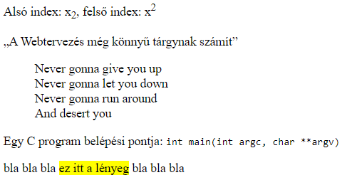

2. gyakorlat¶
A gyakorlat anyaga¶
Ezen a gyakorlaton folytatjuk a HTML tagekkel és azok attribútumaival való ismerkedést. Ezt követően szó lesz a CSS-ről és annak alapvető elemeiről.
A HTML alapjai (2. rész)¶
Az alábbiakban folytatjuk a HTML dokumentum törzsrészében (body) használatos tagekkel való ismerkedést.
Néhány fontosabb szövegelem¶
<h1>...</h1>,<h2>...</h2>, ...,<h6>...</h6>: címsorok<p>...</p>: bekezdés<br/>: sortörés (páratlan tag)<hr/>: elválasztó vonal (páratlan tag)<pre>...</pre>: előre formázott szöveg- alakhű megjelenítést biztosít: a szöveg megőrzi a whitespace karaktereket (pl. szóköz, sortörés, tabulátor)
- akkor használjuk, ha a szöveg jellegéből szemantikusan következik a tartalom szóközökkel, térközökkel való formázása (pl. ASCII-ábrák, kódrészletek, képversek)
1 2 3 4 5 6 7 8 9 10 11 12 13 14 15 16 17 18 | |
<em>...</em>: tartalom hangsúlyozása (szemantikus jelentés, általában dőlt betűkkel jelenik meg)<strong>...</strong>: erős kiemelés (szemantikus jelentés, általában félkővér betűkkel jelenik meg)
1 2 3 4 5 6 7 8 9 10 11 12 13 14 | |
Megjegyzés
A HTML tageket ne formázási célokra használjuk! Ha egy szövegrészt félkövérré vagy dőltté szeretnénk tenni, használjunk CSS-t!
<sub>...</sub>: alsó index<sup>...</sup>: felső index<q>...</q>: idézet (az idézőjeleket automatikusan kiteszi)<blockquote>...</blockquote>: idézetblokk<code>...</code>: kódrészlet<mark>...</mark>: vizuális szövegkiemelés
1 2 3 4 5 6 7 8 9 10 11 12 13 14 15 16 17 18 19 20 21 | |

Iframe¶
Az <iframe>...</iframe> tag segítségével beszúrhatunk egy úgynevezett iframe-et (inline frame, másnéven lebegőkeret) a weboldalunkra. Ezekben az iframe-ekben lehetőségünk van megnyitni egy másik weboldalt.
A tag fontosabb attribútumai:
src: a megnyitni kívánt weboldal URL-jewidth: az iframe szélessége (pixelben)height: az iframe magassága (pixelben).
Példa: Szúrjuk be a TTIK honlapját a weboldalunkra egy 600x600-as iframe-ben!
1 2 3 4 5 6 7 8 9 10 | |
Listák¶
TODO
Táblázatok¶
TODO
Utolsó frissítés: 2020-11-15 21:39:38